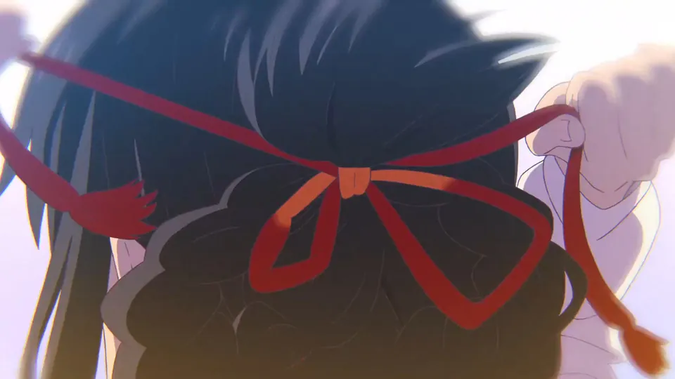
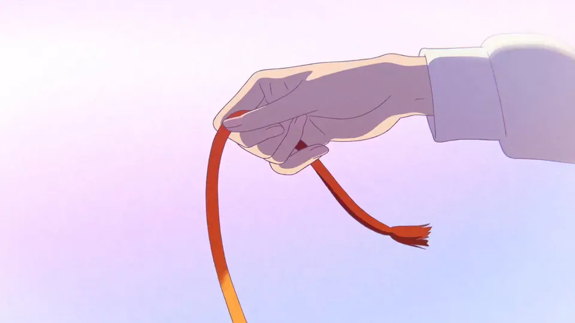
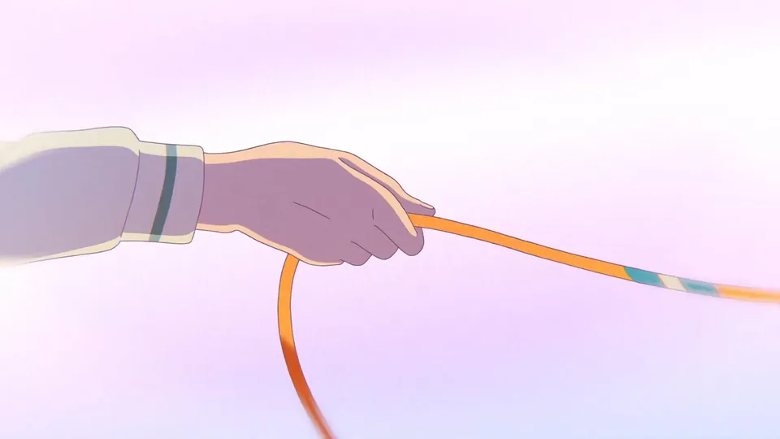
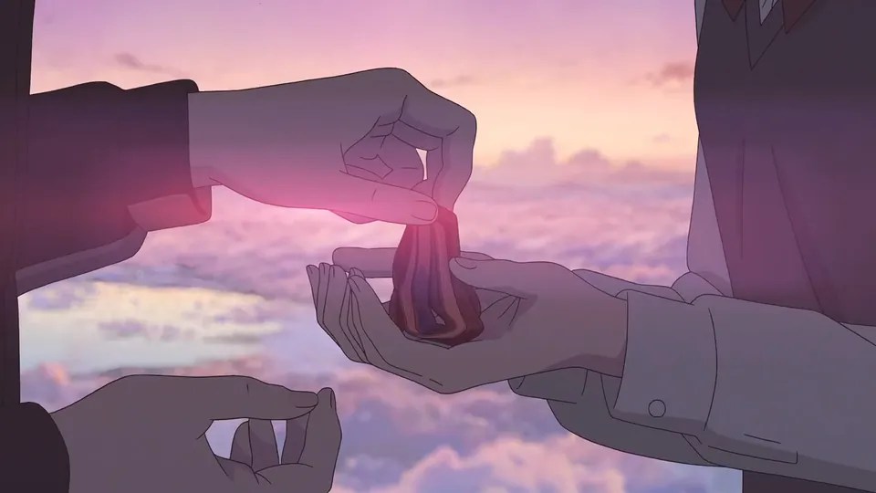
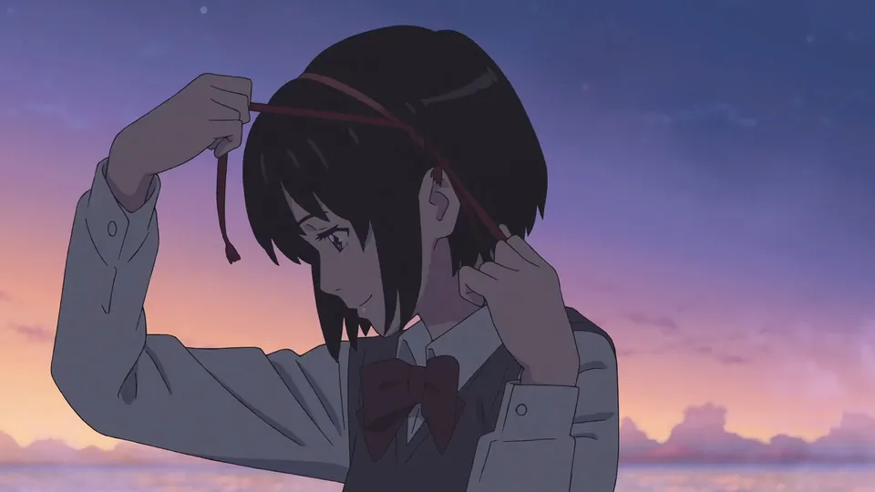

在《你的名字。》里，几乎所有东西都会被遗忘：手机里的日记会消失，手心里的字会被擦掉，名字会在醒来的瞬间溜走。只有一样东西从头到尾都在——一根红色的组纽11组纽（組紐，くみひも）是用多股丝线交叉编结而成的绳带，传统上用于和服的带缔、刀剑的挂绳等。片中宫水家世代以编组纽为家传手艺。。
这根绳子的路线，是整部电影里唯一一条完整的闭环：它从三叶的头发出发，到了泷的手腕上，在那里停留了三年，然后在黄昏的山顶回到三叶手里，又被系回了她的头发。它是唯一一个双向穿越了那三年的东西。
这篇短文，就跟着这根绳子走一遍。
编to braid
电影前半段有一场很安静的戏：外婆一叶坐在屋里，教三叶和四叶编组纽。彩色的丝线从编台上垂下来，坠子一圈一圈地转。一叶一边编，一边说起这片土地的神——“结び”。
糸を繋げることも結び— 一叶
把线连起来是结び，把人连起来是结び，时间的流动也是结び。线会扭在一起、缠在一起，有时会回头，有时会断，然后又接上。外婆说，组纽就是这样编出来的，所以它就是时间。
这种说法放在任何一部别的电影里，大概只是一段好听的民俗台词。可是《你的名字。》把它当真了：它真的把时间当作一根绳子来处理。
fig. 01官方视觉里，这根绳子总是在两个人之间绕成一个松松的圈。
抛to throw
绳子第一次离开三叶，是在东京的电车上。那是 2013 年，她鼓起勇气来东京找泷，在车厢里认出了他，可他却一脸困惑——那时的他，还完全不认识她。
车门开了，他被人流推着下车。就在门关上的前一刻，三叶解下头上的组纽，向他抛了过去。

解

抛

接
fig. 02 – 04三个镜头，不到两秒。画面被柔光吃掉了边缘，像是一段被过度曝光的记忆。
这三个镜头有一种非常特别的质感：背景几乎全白，只有一层淡淡的粉紫色，手和绳子被逆光勾出一圈亮边。和电影里其他场景厚重的背景相比，这里几乎没有“背景”可言——就好像这一刻被从时间里单独剪了出来。
他隔着车门问她叫什么名字，她一边把绳子抛过去，一边喊出了自己的名字。三年后，他只记得那根绳子。
戴to wear
此后的三年，泷一直把这根绳子缠在手腕上。他不知道是谁给的，只记得是在电车上，一个陌生的女孩。他也说不清自己为什么一直戴着它。
fig. 05暗色的袖口，和一圈突兀的红。
如果你留意泷在东京的那些镜头，会发现这一点红色几乎总在画面里，只是从来不在焦点上：在他握着电车吊环的手上，在他画糸守风景的手腕边，在他翻看手机的时候。新海诚把它放在一个“看得见却不会被注意”的位置，就像一件你戴了很久、早已忘了它存在的饰物。
直到他去了糸守，看到镇子的毁灭，低头看向自己的手腕，才第一次真正“看见”了它。
还to return
黄昏的山顶上，两个人终于见面。泷做的第一件事，就是把这根绳子还给她。他说，那时候你来见我了吧，三年前。

还

系
fig. 06同一根绳子：在 2016 年的手里交出，在 2013 年的头发上系好。
请留意这个动作在时间上有多奇妙：泷是在 2016 年把绳子递出去的，而三叶是在 2013 年接住它的。在“片割れ時”那几分钟里，两个时间短暂地叠在一起，这根绳子就从一个时间被交到了另一个时间。
于是闭环完成了。三叶 2013 年在电车上把绳子给了泷；泷戴了三年；然后在 2013 年的黄昏，把它还了回去。这根绳子本身没有起点——你说不清它到底是先在三叶那里，还是先在泷那里。它就像外婆说的那样，“扭在一起，缠在一起，有时回头”。
你说不清它是先在她那里，
还是先在他那里。— 关于组纽的闭环
结musubi
很多年以后，东京，两列并行的电车。人群之中，泷看到一个陌生女孩的背影——她的头发上系着一根红色的发绳。
这个时候，两人关于对方的记忆都已经消失了。名字没有留下，日记没有留下，连那场彗星之夜的细节也模糊了。可这根绳子还在。它不需要任何人记得它的来历，它只是被系在那里，像一个没有说出口的约定。
fig. 07结び。
回头看，《你的名字。》对“记忆”其实相当悲观：它反复告诉我们，人是会忘的，名字是会消失的，再强烈的感情也敌不过一个早晨。但它对“连接”却出奇地乐观。记忆可以断，连接却可以留下来——以一根绳子、一种习惯、一个莫名回头的瞬间的形式。
这大概就是外婆那段话真正的意思。线会断，但组纽不会，因为它从一开始就不是一根线，而是许多根线交织在一起的结果。时间也是这样。